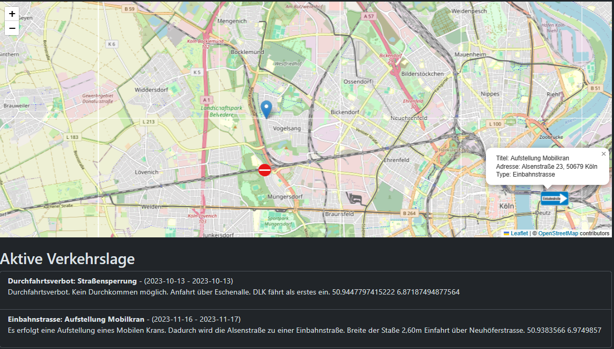
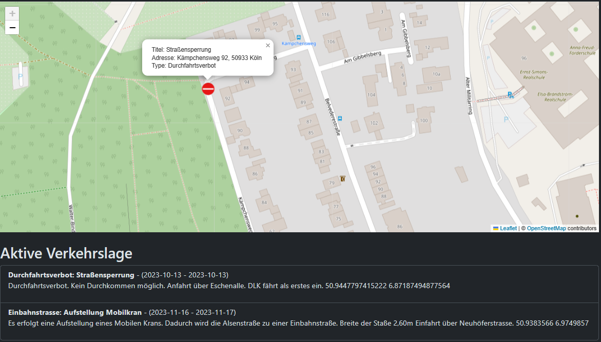
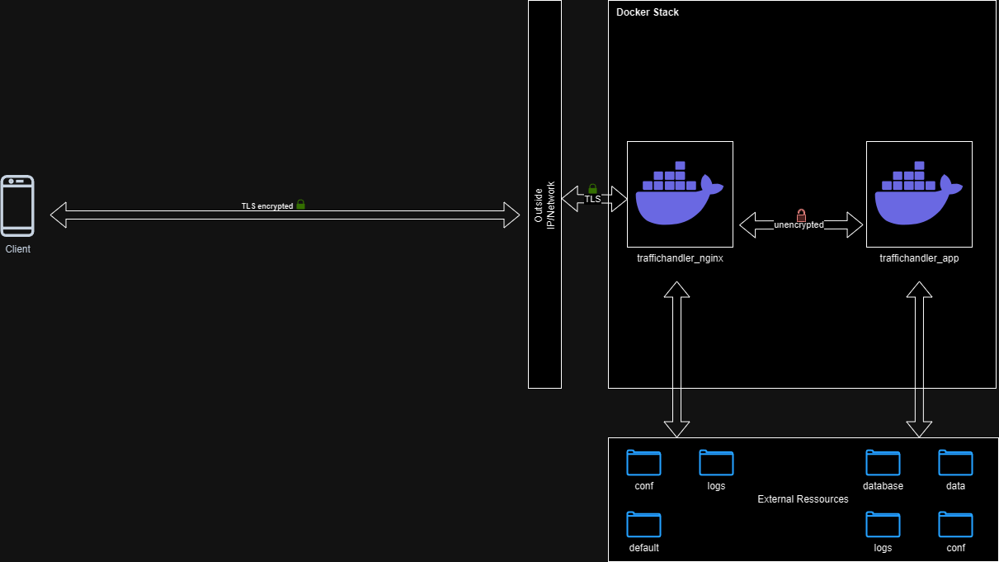
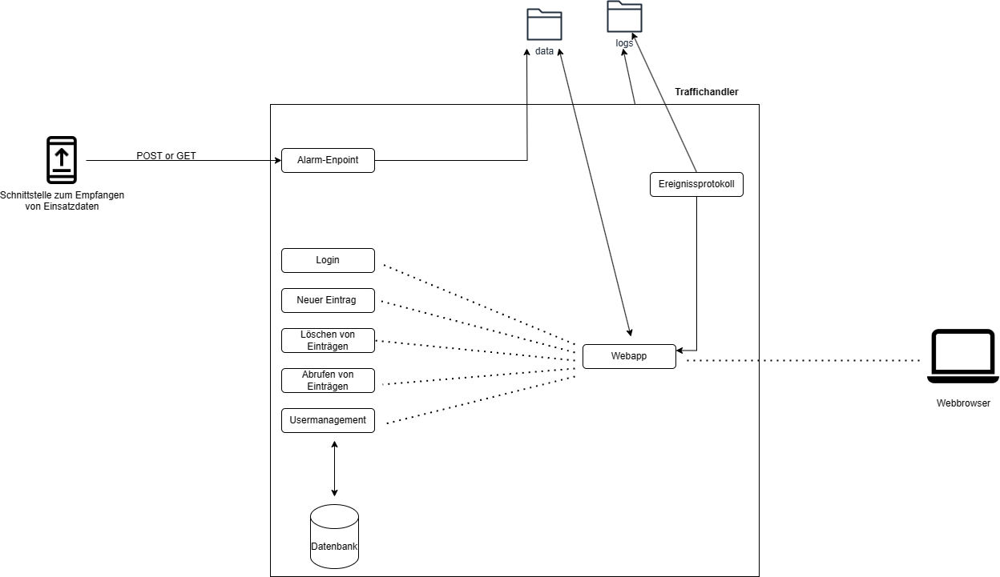

Traffic Handler Docker
BETA Version! Bitte aktuell nur zu Testzwecken nutzen. Nicht Produktiv schalten.
⚠️ Bitte bachte das es sich um eine BETA-Version handelt. Wir empfehlen die Nutzung einer VPN-Verbindung.
Informationen
Das Ziel des Projekts ist es, das Fortschreiten der Digitalisierung im Feuerwehr- und Rettungswesen zu unterstützen. Besonders im Fokus stehen dabei kleine Einheiten, für die verfügbare Lösungen finanziell nicht tragbar sind.
Der ERR-Fire Traffic Handler repräsentiert ein innovatives System, das darauf abzielt, Verkehrsbeeinträchtigungen, langfristige Baustellen und ähnliche Hindernisse zu erfassen und in einem übersichtlichen System darzustellen. Dadurch entfällt die Notwendigkeit von Zetteln oder Einmalnachrichten, die mit der Zeit oft vergessen werden oder bei mehreren Verkehrsbeeinträchtigungen zu Chaos führen. Das System ermöglicht den Einsatzkräften, alle relevanten Informationen auf einen Blick zu erhalten. Durch das integrierte Kartenmaterial können sie schnell und zuverlässig Entscheidungen treffen und sich während der Anfahrt um weitere wichtige Einsatzvorbereitungen kümmern. Ein essenzieller Aspekt dieses Systems ist die Benutzerverwaltung, welche eine präzise Steuerung der Zugriffsrechte ermöglicht. Diese differenzierten Berechtigungen erlauben es, einzelnen Nutzern spezifische Schreib- oder ausschließlich Leserechte zuzuweisen. Hierdurch wird die Integrität der hinterlegten Daten gewährleistet und ein Höchstmaß an Sicherheit erreicht.
Die Daten werden zentral in einer lokalen Datenbank gespeichert, wodurch Ihnen uneingeschränkte Kontrolle über Ihre Daten gewährt wird.
Darstellung von Verkehrshindernisse
Eingetragene Verkehrshindernisse werden auf einer Karte mit entsprechenden Verkehrszeichen visualisiert. Zudem gibt es eine textuelle Zusammenfassung unterhalb der Karte. Mithilfe dieser Informationen und des aktuellen Standorts können bereits während der Anfahrt Ausweichrouten definiert oder ein Überblick über mögliche Hindernisse an der Einsatzstelle gewonnen werden. Auch erhalten Einsatzkräfte beispielsweise bei Dienstantritt einen Überblick über die aktuelle Verkehrslage im Einsatzgebiet.
 
Struktur/Aufbau
Die Installation wird als Image für Docker bereitgestellt. Darüber hinaus stellen wir eine Docker Compose Konfiguration bereit.
Was ist Docker
Docker ist eine benutzerfreundliche Open-Source-Plattform, mit der Sie Anwendungen in Containern verpacken und ausführen können. Diese Container enthalten nicht nur Ihre Anwendung, sondern auch alle benötigten Bibliotheken und Konfigurationen, wodurch Ihre Anwendung überall konsistent und leicht portabel wird. Container sind eigenständige, ausführbare Einheiten, die Ihre Anwendung und ihre Abhängigkeiten isolieren. Docker-Images sind Vorlagen für Container und können leicht geteilt und wiederverwendet werden. Die Vorteile von Docker für Sie liegen in der Portabilität Ihrer Anwendung, der Isolation von anderen Anwendungen, der effizienten Nutzung von Systemressourcen und der einfachen Handhabung von Containern.
Was ist Docker Compose
Docker Compose ist ein Werkzeug, das die Definition und Verwaltung von Multi-Container-Anwendungen erleichtert. Es ermöglicht Ihnen, eine Anwendung mit mehreren Diensten zu definieren, wobei jeder Dienst in einem eigenen Docker-Container läuft. Die Konfiguration erfolgt in einer einzigen Datei, was die Bereitstellung und Skalierung von Anwendungen vereinfacht. Mit Docker Compose können Sie den gesamten Anwendungsstack, bestehend aus verschiedenen Diensten, Umgebungsvariablen, Netzwerken und Volumes, in einer einzigen docker-compose.yml-Datei beschreiben.
Docker Aufbau TrafficHandler

Aufabu innerhalb der Anwendung

Was ist Nginx
Nginx ist ein leistungsstarker, quelloffener Webserver und Reverse Proxy Server, der für seine hohe Leistung, Skalierbarkeit und Effizienz bekannt ist. Nginx bietet eine einfache Konfigurationssprache und kann sowohl als Webserver für statische Inhalte als auch als Reverse Proxy für den Umgang mit dynamischen Anfragen dienen. Durch seine ereignisgesteuerte Architektur kann Nginx Tausende von gleichzeitigen Verbindungen effizient verarbeiten.
Nutzen innerhalb des TrafficHandler
Wir empfehlen und stellen auch in unserer Konfiguration Nginx bereit. Nginx dient als Reverse Proxy für unsere Anwendung und übernimmt auch die Verschlüsselte TLS Kommunikation zwischen Client und dem Server. So stellen wir sicher, dass ein bereits etabliertes und sicheres System die Kommunikation nach außen übernimmt. Innerhalb des Server werden die Verschlüsselte Datenpakete unverschlüsselt an den TrafficHandler übergeben.